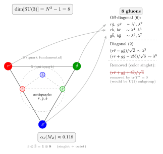

SU(3) 与 QCD — 为什么是八种胶子而不是九种?
上一节讲电弱统一, $SU(2)_L\times U(1)_Y$ 给了 $W^+, W^-, Z, \gamma$ 四条规范玻色子. 这一节换一种相互作用: 强相互作用, 由 SU(3) 色规范对称描述, 简称 QCD (Quantum Chromodynamics). 它和电弱最大的不同是两条: 一, 它的耦合 $\alpha_s$ 比 $\alpha \approx 1/137$ 大得多, 典型 $\mathcal O(0.1 \sim 1)$, 于是微扰展开的收敛性远没电磁学那么好; 二, SU(3) 是非阿贝尔群 —— 不像 U(1) 的 $e^{i\theta}$ 两两可交换 —— 于是胶子自己带色荷, 会互相散射, 这从拉氏量的结构就能看出来.
但在所有这些结构之前, 有一个更基本的问题常常被教科书一笔带过: 为什么偏偏是 8 种胶子? 一个夸克有 $r, g, b$ 三种颜色, 反夸克有 $\bar r, \bar g, \bar b$ 三种反颜色, 胶子携带"色 $\otimes$ 反色", 按这个粗糙的计数应该有 $3\times 3 = 9$ 种组合. 可翻开任何一本标准模型教科书, 你看到的都是"8 个胶子", 对应 8 个 Gell-Mann 矩阵. 那第 9 个去哪儿了? 这一节用一大半篇幅把这件事严格推一遍 —— 它的答案就藏在群论里那个不起眼的 $N^2 - 1$ 上.
一、从"颜色"到 SU(3): 一个对称性的命名问题
先把故事的起点摆清楚. 1964 年 Gell-Mann 与 Zweig 独立提出夸克模型: 所有强子都是三种基本费米子 (u, d, s) 及其反粒子的束缚态. Mesons 是夸克-反夸克对 ($\bar q q$), baryons 是三夸克态 ($qqq$). 模型很成功, 但立刻碰到一个自旋-统计的灾难: $\Delta^{++}$ 重子是三个 u 夸克全部自旋向上的态 $|u\!\uparrow\, u\!\uparrow\, u\!\uparrow\rangle$, 轨道角动量为 0. 三个相同的费米子处在完全相同的态, 波函数对称 —— 这违反了 Pauli 原理, 按理不该存在.
1965 年 Greenberg, 以及 Han 与 Nambu 独立提出解决办法: 每种夸克还带一个额外的内部量子数, 有三种可能的取值 $\{r, g, b\}$. 在 $\Delta^{++}$ 里三个 u 夸克分别取三种不同颜色, 整体波函数对"颜色"完全反对称 $\epsilon_{ijk}u^i u^j u^k$, Pauli 原理恢复. 这是"颜色"的原始含义 — 它只是一个标签, 物理学家恰好挑了跟视觉颜色同名的词, 像变量名一样, 并没有光谱含义.
接下来的关键一步, 是把这个分立标签提升为一个连续对称性. 如果颜色只是三个标签 $\{1,2,3\}$, 我们可以只要求物理对置换群 $S_3$ 不变; 但如果要求对任意 $3\times 3$ 幺正变换 $U$: $q^i \to U^i_j q^j$ 都不变, 这是一个更强的对称性, 即连续的 SU(3). 再进一步, 如果这个对称还是定域的 — 即变换 $U(x)$ 可以逐点不同 — 按照规范原理 (参见上几节), 为了保住局部对称, 必须引入一组规范场 $A_\mu^a$, 它们正是"胶子". 到这一步, 第一性的动机已经齐了: 强子里的颜色自由度 + 局部规范不变 $\Rightarrow$ SU(3) 规范理论 $\Rightarrow$ 胶子. 剩下只需回答两件事: 有几条胶子? 它们之间怎样作用?
前者就是本节 deepdive 的核心问题 "为什么是 8 而不是 9"; 后者是本节第三部分要展开的非阿贝尔结构. 注意这里颜色 SU(3) 和 Gell-Mann 1964 年著名的"flavor SU(3)" (把 $u, d, s$ 当成一个三重态) 是两回事 — 它们只是数学上同名的群, 物理含义完全不同. 前者是精确规范对称 (所有观测物理都以此为铁律); 后者是强子谱里因 $m_u \approx m_d \approx m_s$ 而近似出现的全局对称 (精确破缺于夸克质量差).
二、Deepdive: 为什么 SU(3) 给 $8 = N^2 - 1$ 个生成元?
这是本节要严格推的 cliché 概念. 设想一个一般的 $3\times 3$ 复矩阵 $U$. "幺正" (unitary) 意味着 $U^\dagger U = \mathbb I$; "special" 意味着 $\det U = 1$. 我们想数: 在这两个约束下 $U$ 有多少个独立实自由度, 等价地, 它的李代数 (无穷小生成元) 空间是几维.
第一步: 计 $3\times 3$ 复矩阵的实自由度. 一个 $3\times 3$ 的复矩阵有 9 个复元素, 即 $9\times 2 = 18$ 个实自由度. 到此是最大的初始集合.
第二步: 强加幺正条件 $U^\dagger U = \mathbb I$. 展开这是 "矩阵 $U^\dagger U$ 等于 $3\times 3$ 单位阵". 但 $U^\dagger U$ 自动是厄米的 (因 $(U^\dagger U)^\dagger = U^\dagger U$), 所以它不是 9 个独立条件, 而是一个厄米 $3\times 3$ 矩阵所需的实参数数. 一个 $N\times N$ 厄米矩阵的独立实参数是: $N$ 个对角实数, 加 $N(N-1)/2$ 个上三角复元素 (每个 2 个实数), 共 $N + N(N-1) = N^2$ 个. 所以 $U^\dagger U = \mathbb I$ 是 $N^2 = 9$ 个独立实方程. 扣掉它们, 幺正群 U(3) 的实维数是 $2N^2 - N^2 = N^2 = 9$.
第三步: 强加 $\det U = 1$. 对一般幺正矩阵 $\det U$ 是一个复数, 模为 1, 即 $\det U = e^{i\alpha}$ 对某实数 $\alpha$. $\det U = 1$ 等价于 $\alpha = 0$ 这一个实条件. 再扣一个实参数, SU(3) 的实维数为 $N^2 - 1 = 8$.
这就是朴素粗计数的严格版本. 但更有物理感的说法, 是把群的维数翻译成它的李代数的维数 — 也就是无穷小生成元 $T^a$ 的线性空间维数. 把 $U = \exp(i\alpha_a T^a)$ 在单位元展开, $\alpha_a$ 小, $U \approx \mathbb I + i\alpha_a T^a$. 代入幺正条件 $U^\dagger U = \mathbb I$, 展开至一阶:
$$ (\mathbb I - i\alpha_a (T^a)^\dagger)(\mathbb I + i\alpha_a T^a) = \mathbb I + i\alpha_a[T^a - (T^a)^\dagger] + \mathcal O(\alpha^2) = \mathbb I. $$
一阶必须消去, 即 $T^a = (T^a)^\dagger$ — 生成元是厄米的. 再强加 $\det U = 1$: 对矩阵 $\det e^{iA} = e^{i\,\text{tr}\,A}$, 于是 $\det U = 1 \Rightarrow \text{tr}(T^a) = 0$ — 生成元无迹.
问题归结为: $N\times N$ 厄米无迹矩阵组成的实线性空间维数是多少? 还是上面的计数. 厄米矩阵的维数是 $N^2$ (如第二步所述). 加"无迹"扣 1, 得到
$$ \dim[\text{SU}(N)] = N^2 - 1. \tag{1} $$
对 $N = 3$, 即 $8$. 这就是 SU(3) 规范理论里必定有 8 条独立规范玻色子 (胶子) 的群论根据. 它不是一个实验事实, 不是经验归纳, 是一条从"幺正 + 行列式等于 1 + 矩阵维数"这三件小事里纯代数地掉出来的数.
那粗朴"3 色 $\times$ 3 反色 = 9"里被扣掉的那个第 9 个到底是什么? 它正是那条被 $\text{tr}(T^a) = 0$ 扣掉的"单位矩阵方向". 如果容许 $T^0 \propto \mathbb I$ 这条生成元, 对应的规范玻色子是一个"色单态胶子" $A_\mu^0 \propto (r\bar r + g\bar g + b\bar b)/\sqrt 3$. 它不和任何色荷区别耦合 (因为对所有颜色一视同仁), 相当于一个额外的 U(1) 色规范场. 这样的场会带来新的长程力 — 即色版本的电磁力, 可以无限远传. 实验上我们根本找不到这种力 (核物理尺度以上, 强作用力是指数衰减的), 所以这条额外胶子 物理上不存在. SU(3) 正好把它扣掉, 留下 8 条"纯 SU(3) 方向"的胶子, 每一条都非零带色荷, 都受限于禁闭机制, 没有长程贡献. 从这个意义上说, "$N^2 - 1$" 不只是算术上的优雅, 它还暗中保证了强相互作用只能是"短程"的.
为了让这 8 条胶子具体化, 物理学家常用 Gell-Mann 矩阵 $\lambda^a$ ($a = 1,\ldots,8$) 把它们写出来:
$$ \lambda^1 = \begin{pmatrix}0&1&0\\1&0&0\\0&0&0\end{pmatrix}, \lambda^2 = \begin{pmatrix}0&-i&0\\i&0&0\\0&0&0\end{pmatrix}, \lambda^3 = \begin{pmatrix}1&0&0\\0&-1&0\\0&0&0\end{pmatrix}, $$
$$ \lambda^4 = \begin{pmatrix}0&0&1\\0&0&0\\1&0&0\end{pmatrix}, \lambda^5 = \begin{pmatrix}0&0&-i\\0&0&0\\i&0&0\end{pmatrix}, \lambda^6 = \begin{pmatrix}0&0&0\\0&0&1\\0&1&0\end{pmatrix}, $$
$$ \lambda^7 = \begin{pmatrix}0&0&0\\0&0&-i\\0&i&0\end{pmatrix}, \lambda^8 = \frac{1}{\sqrt 3}\begin{pmatrix}1&0&0\\0&1&0\\0&0&-2\end{pmatrix}. $$
所有 $\lambda^a$ 都厄米无迹, 且 $\text{tr}(\lambda^a\lambda^b) = 2\delta^{ab}$. 生成元规范取为 $T^a = \lambda^a/2$. 其中 $\lambda^1, \lambda^2, \lambda^3$ 恰好是三个 Pauli 矩阵塞进 $r-g$ 两色子空间, 给出一个嵌入的 SU(2); $\lambda^8$ 独立于这个嵌入, 对角地给 $b$ 色一个不同权重. 这 8 个矩阵是 SU(3) 李代数的一组具体基, 换任意一组其他基也可以, 但数目被 (1) 式钉死. 与之相比, SU(2) (弱同位旋, 电弱里的 $W^1, W^2, W^3$) 有 $2^2 - 1 = 3$ 条生成元 (三个 Pauli), U(1) 有 $1^2 - 1 \cdot \text{(约定:)}$ —— 不, U(1) 不是 SU, 它的 1 条生成元来自它是一维阿贝尔群. SU($N$) 的 $N^2 - 1$ 计数只在 $N \ge 2$ 时才是群的"规范场数目".

三、QCD 拉氏量与非阿贝尔胶子自作用
把这 8 条胶子和 6 种味道的夸克组装起来, QCD 拉氏量是
$$ \mathcal L_{\rm QCD} = \bar q_i\,(i\gamma^\mu D_\mu^{ij} - m\delta^{ij})\,q_j - \frac14 G_{\mu\nu}^a G^{a\,\mu\nu}, \tag{2} $$
其中 $i, j = 1,2,3$ 是颜色指标, 味道指标隐去. 规范协变导数是
$$ D_\mu^{ij} = \partial_\mu\delta^{ij} - i g_s A_\mu^a (T^a)^{ij}, $$
$g_s$ 是强耦合常数, $A_\mu^a$ 是 8 条胶子场, $T^a = \lambda^a/2$. 这两行的结构几乎原封不动地搬自 QED: 把 $e A_\mu$ 换成 $g_s A_\mu^a T^a$, 把 U(1) 换成 SU(3). 差别藏在场强 $G_{\mu\nu}^a$ 里:
$$ G_{\mu\nu}^a = \partial_\mu A_\nu^a - \partial_\nu A_\mu^a + g_s\,f^{abc} A_\mu^b A_\nu^c. $$
$f^{abc}$ 是 SU(3) 的结构常数, 由 $[T^a, T^b] = i f^{abc} T^c$ 定义. 关键是最后那项 $g_s f^{abc} A_\mu^b A_\nu^c$ — QED 里没有这一项, 因为 U(1) 是阿贝尔群, 结构常数为零. SU(3) 是非阿贝尔的, $f^{abc} \ne 0$, 于是 $G^2 = G_{\mu\nu}^a G^{a\mu\nu}$ 展开里会出现
$$ \text{三胶子项}: \; g_s\, f^{abc}(\partial A)AA, \qquad \text{四胶子项}: \; g_s^2\, f^{abc}f^{ade}\, AAAA. $$
翻译成 Feynman 图的语言: 胶子之间有三胶子顶点 (一条胶子分叉成两条) 和四胶子顶点 (两条胶子散射成两条). 这是强相互作用和电磁相互作用最本质的结构差异 — 光子自己不带电, 两条光子在真空里走过不散; 胶子自己带色荷, 两条胶子相遇就会散射. 这一条非线性, 一路决定了 QCD 后续几乎所有的奇特行为.
最直接的后果是, 胶子自作用让 QCD 在高能下的 $\beta$ 函数变负 — 耦合 $\alpha_s(\mu) = g_s^2/(4\pi)$ 随能标 $\mu$ 增加而减小:
$$ \mu\frac{d\alpha_s}{d\mu} = -\frac{\alpha_s^2}{2\pi}\left(\frac{11}{3}C_A - \frac{2}{3}n_f\right) + \mathcal O(\alpha_s^3), $$
其中 $C_A = N = 3$ 来自胶子自作用, $n_f$ 是有效夸克味道数. SU(3) 且 $n_f \le 16$ 时, 括号内为正, $\beta \lt 0$, 高能下 $\alpha_s \to 0$. 这就是 渐近自由: 夸克在高能 (短距) 下几乎自由, 在低能 (长距) 下被紧紧绑在一起. 1973 年 Gross-Wilczek 和 Politzer 分别独立证明这一点, 2004 年共享诺奖. 把正负号换掉 — 阿贝尔 QED 里 $\beta \gt 0$, 耦合随能标增大而增大 — 结果你得到的是 Landau 极 (Landau pole), 高能下耦合跑飞, 微扰论崩溃. 所以"胶子自作用"这一条, 在物理上恰好 翻转了耦合跑动的方向, 让 QCD 在高能下反而可以精确计算.
四、数字、极限、颜色单态与历史
数字 1: $\alpha_s$ 在电弱能标 $M_Z \approx 91\,\text{GeV}$ 的值. 当代测量给 $\alpha_s(M_Z) = 0.1180 \pm 0.0009$ (PDG 2024). 作一个数量级对比: QED 在同能标下 $\alpha(M_Z) \approx 1/128 \approx 0.0078$. 即 $\alpha_s / \alpha \approx 15$ — 强相互作用在 $Z$ 玻色子能量下还"强"一个多数量级. 虽然数字已经 $\lesssim 0.12$, 微扰展开 $\alpha_s/\pi \approx 0.04$, 每增一阶 QCD 修正大约是百分之四 — 这使得 LHC 的高精度 QCD 计算 (例如 Higgs 产生截面) 必须做到两圈甚至三圈圈图.
数字 2: $\alpha_s$ 在 $1\,\text{GeV}$ 附近. 用一圈公式外推, $\alpha_s(1\,\text{GeV}) \approx 0.5$ 甚至更大, 接近 1. 此时 $\alpha_s/\pi \sim 0.15$, 微扰级数已经不再收敛 — 每一阶和前一阶差不多大. 这正是微扰 QCD 的失效区域. 物理上, 在 $\Lambda_{\rm QCD} \approx 200\,\text{MeV}$ 的能标以下, 夸克和胶子不再以自由态存在, 反而被"禁闭"成强子 (质子、π 介子、ρ 介子...). 相应的空间尺度由 $\hbar c/\Lambda_{\rm QCD} \approx 1\,\text{fm}$ 给出 — 这就是强子的典型大小, 也是所谓"强子化" (hadronization) 发生的尺度.
极限检验: 高能 vs. 低能. 两个极限把 QCD 的反直觉特性对立地摆开:
- 高能 (短距) 极限. $\mu \to \infty$, $\alpha_s \to 0$, 夸克近似自由 (渐近自由). 这允许用微扰论计算高能碰撞里的部分子散射, 例如深度非弹性散射 (DIS) 或 LHC 的大横动量喷注. Bjorken scaling 是第一个实验证据 (1968 SLAC), 后来被规范性地重解释为渐近自由的直接后果.
- 低能 (长距) 极限. $\mu \to \Lambda_{\rm QCD}$, $\alpha_s \to \mathcal O(1)$, 夸克被禁闭在颜色单态里. 物理粒子都是"色白"的 — mesons $\sim \delta^{ij}\bar q_i q_j$ (每种色-反色对平均), baryons $\sim \epsilon_{ijk} q^i q^j q^k$ (三种色完全反对称). 任何孤立的 $q$ 或 $g$ 在真空里都不存在, 只要你试图把它从束缚态拽出来, 拉开的胶子弦会在 $\sim 1\,\text{fm}$ 处断裂, 从真空里诞生一对 $\bar q q$, 用这对新夸克把原夸克"穿上色彩白外套". 这就是对撞机实验里所谓的"喷注" (jet) 的起源 — 一个高能夸克从质子里被踢出, 在飞行的途中拉出一把新强子.
颜色单态的严格定义. "色白"意味着态在 SU(3) 变换下不变 (singlet 表示). 从 $3 \otimes \bar 3 = 1 \oplus 8$ 的分解看, 一个夸克-反夸克对有一个单态和一个 8 重态, 只有单态 $\propto \delta^{ij}\bar q_i q_j$ 是物理 meson (8 重态不物理: 类似"color octet meson"就是裸夸克耦合到色彩八重态, 实验里不存在). 从 $3\otimes 3\otimes 3 = 1 \oplus 8 \oplus 8 \oplus 10$ 看, 三夸克态里同样只有单态部分是物理 baryon, 它正比于 $\epsilon_{ijk} q^i q^j q^k$. 这个 $\epsilon$ 张量把"完全反对称"用群论语言写出来 — 正是 1965 年 Greenberg/Han-Nambu 解决 $\Delta^{++}$ 悖论用的那个波函数.
历史线索. 故事的时间轴大致是这样: 1961 年 Gell-Mann 与 Ne'eman 用 flavor SU(3) 分类强子 (Eightfold Way), 预言 $\Omega^-$ 重子, 1964 年被实验发现. 1964 年 Gell-Mann 和 Zweig 分别提出夸克模型, 三个夸克 u, d, s 构成 flavor SU(3) 基本表示. 1965 年 Greenberg 独立, Han-Nambu 合作, 引入颜色量子数, 解决 $\Delta^{++}$ 统计悖论 — 此时"颜色"还只是一个额外三态量子数, 没有规范场含义. 1964-1971 年间 Yang-Mills 型规范理论逐渐成熟 (来自 1954 年 Yang-Mills 原论文), 特别是 't Hooft 1971 证明非阿贝尔规范理论可重整. 1973 年 Fritzsch-Gell-Mann-Leutwyler (NPB 47, 365) 把以上各片拼起来, 正式写下今天的 QCD 拉氏量 (2) 式: 颜色 SU(3) 作为定域规范对称, 胶子作为 SU(3) 的 8 条规范场, 夸克作为基本表示. 同年 Gross-Wilczek, Politzer 证明渐近自由, 把 QCD 变成一个严格可用的微扰理论 (至少在高能端). 1974 年 J/$\psi$ 发现后 charm 夸克确认, 1977 年 bottom, 1995 年 top, 夸克家族齐备. Gell-Mann 1969 年因强子分类学获诺奖; Gross, Politzer, Wilczek 2004 年因渐近自由获诺奖. 2013 年, LHC 的 ATLAS 和 CMS 确认 Higgs 质量为 125 GeV —— 这和 QCD 没有直接关系, 但它完成了标准模型的最后一块拼图; 之后高精度 QCD 计算是 LHC 物理的底层工具, 所有和 Higgs 或新物理有关的测量都离不开 $\alpha_s$ 的准确值.
小结
一个看似随意的数字 "8 种胶子", 根源完全在群论: 厄米矩阵维数减掉"无迹"一条件, 得 $N^2 - 1 = 8$ 条 SU(3) 生成元, 每条对应一个规范玻色子. 被扣掉的那条 $\propto \mathbb I$ 是色单态, 它若存在会带来长程强力, 物理上根本不允许, 于是 SU(3) 恰到好处地把它挡住. 这 8 条胶子通过非阿贝尔项 $gf^{abc}A^b A^c$ 互相散射, 让 $\beta \lt 0$, 高能渐近自由, 低能禁闭, 把夸克永远锁在颜色单态的强子里. 往后两节, CPT 定理和离散对称性会告诉我们哪些对称是严格的 (C, P, T 本身不是, 但 CPT 是), 味物理和 CKM 矩阵会把夸克味道的混合推到前台; 更远处, 格点 QCD 给出低能禁闭的非微扰证据, 大 $N$ 展开把弦论和规范理论连起来 (AdS/CFT), 强子对撞实验则在每一次 LHC run 里把 $\alpha_s$ 的精度往前推一位. 这一切都始于 1973 年那条写下 $\mathcal L_{\rm QCD}$ 的拉氏密度 — 以及它所凭借的 SU(3) 群论里那个不动声色的 $N^2 - 1$.
▲